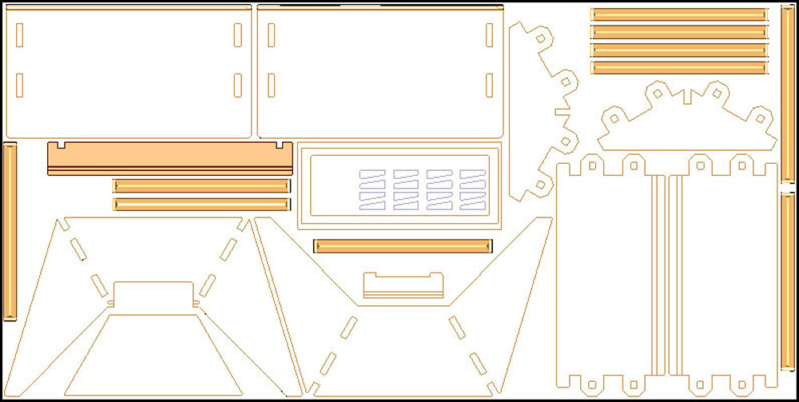
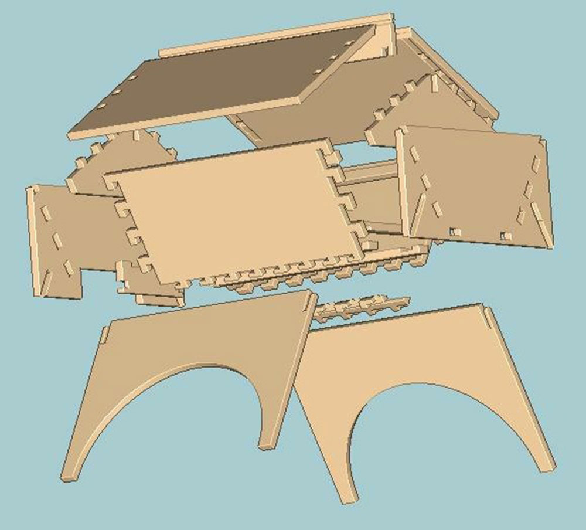
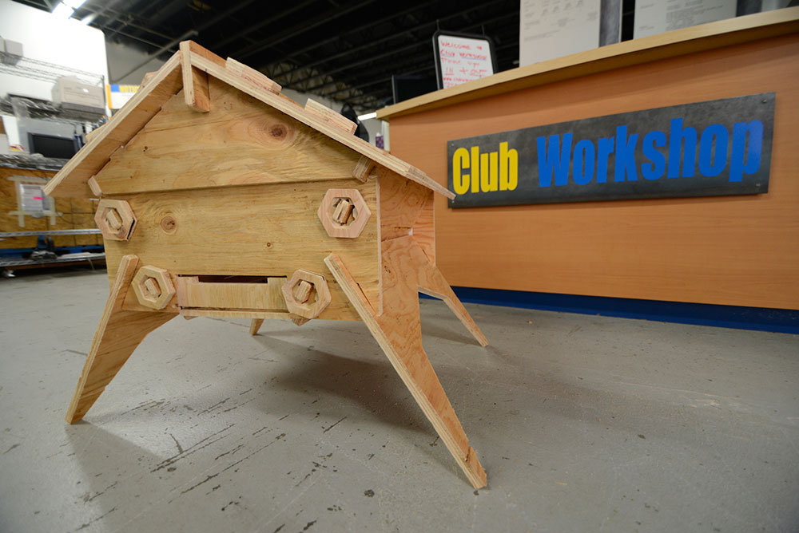
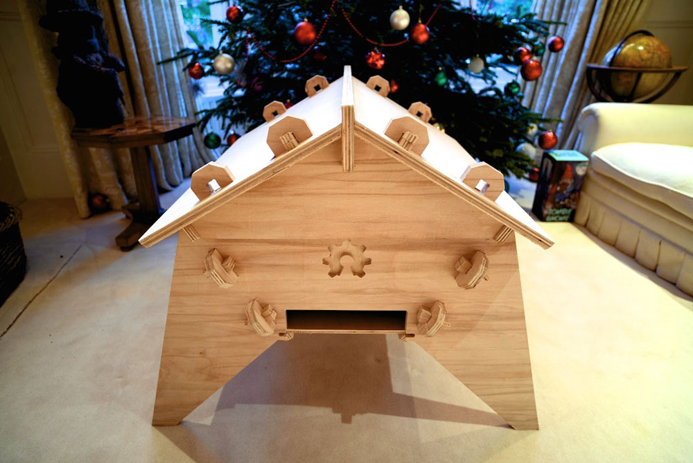

The Colorado Top Bar v3.0 in London, UK
“Never doubt that a small group of thoughtful, committed citizens can change the world; indeed, it is the only thing that ever has.” Margaret Mead
Video by Tristan Copley Smith
A few months ago, our team started thinking about the bee colony collapse problem.
This is a significant issue, with dire implications, and yet there were very few comprehensive solutions on the table. Having failed quite epically at preventing the problem in the first place, we had little faith in regulators and official bodies acting fast. This was an opportunity to help citizens solve the crisis quickly, and on their own terms.
We began by recognising three important trends: maker culture, open source development and citizen science.
If you like to make stuff, you are part of the maker movement. It’s a broad term for DIY in the 21st Century, especially when you’re building technology or building stuff with technology. With hundreds of publically accessible Makerspaces around the world, and a growing network of FabLabs, the maker movement has a strong global presence, and significant productive capacity in many cities.

The Colorado Top Bar fits on a single sheet of plywood.
Open source development enables remote parties from anywhere in the world to crowd-develop, share designs, and produce the best ‘stuff’ imaginable. This could be anything from software like Linux, to a car like OSVehicle, to a home like the Wikihouse. Unlike traditional products, open source designs and software are shared freely online without proprietary restrictions, and can be protected with open licences. Additionally, many open source hardware designs can be built using automated tools that are increasingly available thanks to the maker movement.
Citizen science is an emerging trend, involving participation of everyday people (or, non-scientists) in large or small scale experiments. This could be crowd-analysing a huge trove of data, like the amazing Stardust project, or it could be citizens generating the data themselves, like the indigenous mapping project in the Congo. By nature, these projects embrace openness, encourage collaboration, and utilise innovative technology.
Part of the answer fell into place when I visited FabLab Barcelona in Spain earlier this year. Here I met Tomas Diez and Jonathan Minchin who were embedding sensors into beehives and streaming the data to an open online platform called the Smart Citizen. This allowed the team to remotely monitor health-indicating factors inside their colony, and if anything were to happen, the data could be analysed to help figure out what went wrong.
Embracing the collaborative vibes, FabLab Barcelona and OTC joined forces to initiate the Open Source Beehive Project - a happy accident that turned out to be a good idea.
We would develop open source sensors and beehive designs to help citizens cheaply and effectively build solutions to the colony collapse problem. With a global mesh network of these hives in operation, and partnerships with academic and research institutions, we wanted to generate new insight into where, when, and why colony collapse is happening, and create informed solutions around that data.
Back in Denver, we became more inspired by the Wikihouse project. If a human scale house could be downloaded and ‘printed’ using machines available in almost any FabLab, surely the same was possible for a beehive?
And so with the help of talented OTC collaborator (and beekeeper) Lenny Wayne Patterson, we got to work inventing the Colorado Top Bar hive.
We aimed to prioritise:
From Oklahoma, Lenny-Wayne sent designs for us to study and review in Colorado. Within a few short weeks, we printed the first prototype.

The Colorado Top Bar version 1.0.
Prototype 1 showed us what was possible, but was too large and heavy, requiring two 4x8 plywood sheets. This prevented the hive from being easily portable, and wasted more material than necessary. Nonetheless, the results were encouraging!

The Colorado Top Bar version 2.0.
Prototype 2 showed a huge improvement. It successfully squeezed onto a single 4x8 sheet and was a much more manageable size. However, after learning that bees can produce over 200 pounds of honey in a single season, the leg strength needed improving. We also designed a locking nut that seemed great in theory, but vastly prolonged the fabrication process, and was not robust enough for our purposes.

The Colorado Top Bar version 3.0.
Prototype 3 (current version) is getting very close to the mark. This design is far more robust, and uses a simpler and more effective locking mechanism in the form of hole and peg joints. After speaking with Andre Houssney of Zambeezi, we learned that the top bars shouldn't be longer than 16.5 inches, otherwise the combs will deform - ours is currently 21.5 inches long.
Once the design is improved, we will roll focus on upgrading our sensor board to include volatile organic compound sensors (for pesticides), weight sensors (for honey measurement), and innovative vibration sensors that can monitor the mood and behaviour of a colony. This means that soon, you will be able to order or build a beehive at low cost, log and monitor your colonies health remotely (there is an iPhone app for doing this on the move) and become part of the solution to this global environmental problem.
If you have interest in participating in this project, or any skills in design, electronics, or sensor technologies, we could really use your help. Please read our Open Letter to Collaborators, sign up to the project newsletter, or email the project directly on hello@opensourcebeehive.net. Monetary donations are also very helpful to help cover our prototyping costs.
We will continue to post major developments as the project continues!
Thanks for all you do,
Tristan Copley Smith